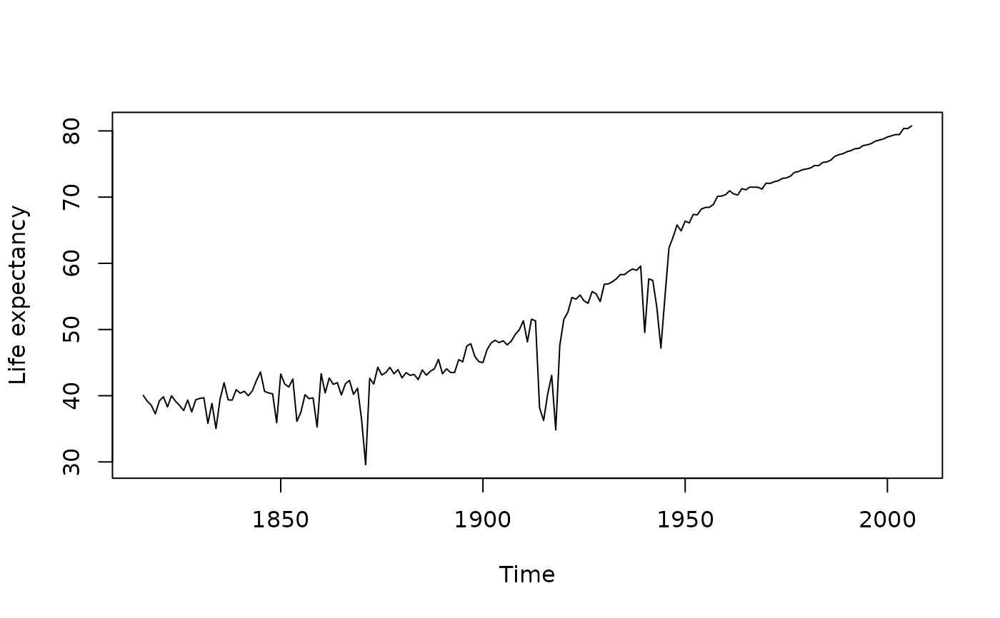

All three functions estimate life expectancy from lifetable.
The function flife.expectancy is primarily designed for forecast life expectancies and will optionally
produce prediction intervals. Where appropriate, it will package the results as a forecast object
which makes it much easier to product nice plots of forecast life expectancies.
The e0 function is a shorthand wrapper for flife.expectancy with age=0.
Usage
life.expectancy(
data,
series = names(data$rate)[1],
years = data$year,
type = c("period", "cohort"),
age = min(data$age),
max.age = min(100, max(data$age))
)
flife.expectancy(
data,
series = NULL,
years = data$year,
type = c("period", "cohort"),
age,
max.age = NULL,
PI = FALSE,
nsim = 500,
...
)
e0(
data,
series = NULL,
years = data$year,
type = c("period", "cohort"),
max.age = NULL,
PI = FALSE,
nsim = 500,
...
)Arguments
- data
Demogdata object of type “mortality” such as obtained from
read.demogdata, or an object of classfmforecastsuch as the output fromforecast.fdmorforecast.lca, or an object of classfmforecast2such as the output fromforecast.fdmpr.- series
Name of mortality series to use. Default is the first demogdata series in data.
- years
Vector indicating which years to use.
- type
Either
periodorcohort.- age
Age at which life expectancy is to be calculated.
- max.age
Maximum age for life table calculation.
- PI
If TRUE, produce a prediction interval.
- nsim
Number of simulations to use when computing a prediction interval.
- ...
Other arguments passed to
simulatewhen producing prediction intervals.
Value
Time series of life expectancies (one per year), or a forecast object of life expectancies (one per year).
Examples
plot(life.expectancy(fr.mort), ylab = "Life expectancy")

france.LC <- lca(fr.mort, adjust = "e0", years = 1950:1997)
france.fcast <- forecast(france.LC, jumpchoice = "actual")
france.e0.f <- life.expectancy(france.fcast)
france.fdm <- fdm(extract.years(fr.mort, years = 1950:2006))
france.fcast <- forecast(france.fdm)
if (FALSE) { # \dontrun{
e0.fcast <- e0(france.fcast, PI = TRUE, nsim = 200)
plot(e0.fcast)
} # }
life.expectancy(fr.mort, type = "cohort", age = 50)
#> Time Series:
#> Start = 1816
#> End = 2006
#> Frequency = 1
#> 1816 age 50 1817 age 50 1818 age 50 1819 age 50 1820 age 50 1821 age 50
#> 19.72675 19.77427 19.75402 19.74982 19.74592 19.86730
#> 1822 age 50 1823 age 50 1824 age 50 1825 age 50 1826 age 50 1827 age 50
#> 19.99717 20.03869 20.08730 20.14467 20.02787 19.85009
#> 1828 age 50 1829 age 50 1830 age 50 1831 age 50 1832 age 50 1833 age 50
#> 19.83156 19.85777 19.87789 19.93103 19.96289 20.04966
#> 1834 age 50 1835 age 50 1836 age 50 1837 age 50 1838 age 50 1839 age 50
#> 20.00426 19.99045 20.09874 20.14829 20.14755 20.17557
#> 1840 age 50 1841 age 50 1842 age 50 1843 age 50 1844 age 50 1845 age 50
#> 20.17548 20.16859 20.16698 20.21469 20.25597 20.28974
#> 1846 age 50 1847 age 50 1848 age 50 1849 age 50 1850 age 50 1851 age 50
#> 19.98572 19.64638 19.61782 19.59439 19.68062 19.71351
#> 1852 age 50 1853 age 50 1854 age 50 1855 age 50 1856 age 50 1857 age 50
#> 19.86490 20.08232 20.24808 20.48635 20.55497 20.49393
#> 1858 age 50 1859 age 50 1860 age 50 1861 age 50 1862 age 50 1863 age 50
#> 20.43714 20.43682 20.47911 20.40236 20.27481 20.19645
#> 1864 age 50 1865 age 50 1866 age 50 1867 age 50 1868 age 50 1869 age 50
#> 20.18473 20.21131 20.23126 20.23587 20.22132 20.19139
#> 1870 age 50 1871 age 50 1872 age 50 1873 age 50 1874 age 50 1875 age 50
#> 20.26890 20.41958 20.59769 20.48832 20.38135 20.47794
#> 1876 age 50 1877 age 50 1878 age 50 1879 age 50 1880 age 50 1881 age 50
#> 20.50942 20.39913 20.37401 20.50313 20.48639 20.64544
#> 1882 age 50 1883 age 50 1884 age 50 1885 age 50 1886 age 50 1887 age 50
#> 20.66618 20.64216 20.60563 20.80081 20.91485 20.82972
#> 1888 age 50 1889 age 50 1890 age 50 1891 age 50 1892 age 50 1893 age 50
#> 20.86738 20.79558 20.87882 20.97385 20.91301 20.80218
#> 1894 age 50 1895 age 50 1896 age 50 1897 age 50 1898 age 50 1899 age 50
#> 20.69763 20.99188 21.03451 20.85608 21.23694 21.09865
#> 1900 age 50 1901 age 50 1902 age 50 1903 age 50 1904 age 50 1905 age 50
#> 21.16319 21.20311 21.34037 21.21143 21.24579 21.52098
#> 1906 age 50 1907 age 50 1908 age 50 1909 age 50 1910 age 50 1911 age 50
#> 21.52456 21.39335 21.41661 21.46997 21.61052 21.74970
#> 1912 age 50 1913 age 50 1914 age 50 1915 age 50 1916 age 50 1917 age 50
#> 21.69860 21.62030 21.65157 21.77359 21.95733 21.87860
#> 1918 age 50 1919 age 50 1920 age 50 1921 age 50 1922 age 50 1923 age 50
#> 22.03981 22.30896 22.29071 22.47604 22.80375 22.36367
#> 1924 age 50 1925 age 50 1926 age 50 1927 age 50 1928 age 50 1929 age 50
#> 22.61964 22.68718 22.81352 23.07229 23.05972 23.21677
#> 1930 age 50 1931 age 50 1932 age 50 1933 age 50 1934 age 50 1935 age 50
#> 23.45212 23.84019 23.74610 23.85561 24.09795 24.25669
#> 1936 age 50 1937 age 50 1938 age 50 1939 age 50 1940 age 50 1941 age 50
#> 24.34676 24.58613 24.74078 25.06496 25.12928 25.40989
#> 1942 age 50 1943 age 50 1944 age 50 1945 age 50 1946 age 50 1947 age 50
#> 25.64446 25.79719 25.88135 26.05627 26.28776 26.22593
#> 1948 age 50 1949 age 50 1950 age 50 1951 age 50 1952 age 50 1953 age 50
#> 26.17130 26.30101 26.33059 26.53742 26.70477 26.86355
#> 1954 age 50 1955 age 50 1956 age 50 1957 age 50 1958 age 50 1959 age 50
#> 27.09905 27.19533 27.45351 NA NA NA
#> 1960 age 50 1961 age 50 1962 age 50 1963 age 50 1964 age 50 1965 age 50
#> NA NA NA NA NA NA
#> 1966 age 50 1967 age 50 1968 age 50 1969 age 50 1970 age 50 1971 age 50
#> NA NA NA NA NA NA
#> 1972 age 50 1973 age 50 1974 age 50 1975 age 50 1976 age 50 1977 age 50
#> NA NA NA NA NA NA
#> 1978 age 50 1979 age 50 1980 age 50 1981 age 50 1982 age 50 1983 age 50
#> NA NA NA NA NA NA
#> 1984 age 50 1985 age 50 1986 age 50 1987 age 50 1988 age 50 1989 age 50
#> NA NA NA NA NA NA
#> 1990 age 50 1991 age 50 1992 age 50 1993 age 50 1994 age 50 1995 age 50
#> NA NA NA NA NA NA
#> 1996 age 50 1997 age 50 1998 age 50 1999 age 50 2000 age 50 2001 age 50
#> NA NA NA NA NA NA
#> 2002 age 50 2003 age 50 2004 age 50 2005 age 50 2006 age 50
#> NA NA NA NA NA